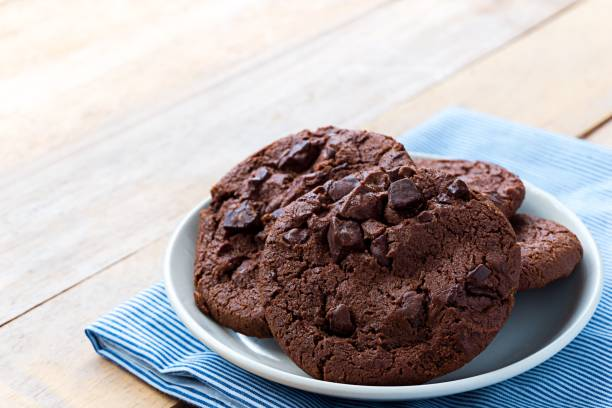

Chocolate Cookies Recipe

Discription
These delicious Chocolate cookies taste like brownies. They're crisp
on the outside, soft and fudgy in the inside.
Ingredients
- 2 cups of white sugar
- 1 1/4 cups margarine, softened
- 2 large eggs
- 2 teaspoons of vanilla extract
- 2 cups of all-purpose flour
- 3/4 cup of unsweetened cocoa powder
- 1 teaspoon of baking soda
- 1/8 teaspoon of salt
- 1 cup of chopped walnuts
Steps:
-
Preheat the oven to 175 degrees C(350 degrees F).
-
Cream sugar and margarine in a large bowl until light and fluffy.
Beat in eggs, one at a time, then stir in vanilla.
-
Combine flour, cocoa, baking soda, and salt in a separate bowl.
Add to the creamed mixture and mix until just blended. Stir in
walnuts. Drop spoonfuls of dough 5.08cm(2 inched) apart onto
ungreased cookie sheets.
-
Bake in the preheated oven until edges are set and centers are
soft, 8 to 10 minutes. Let sit briefly before transferring to wire
racks to cool completely.
Back Home